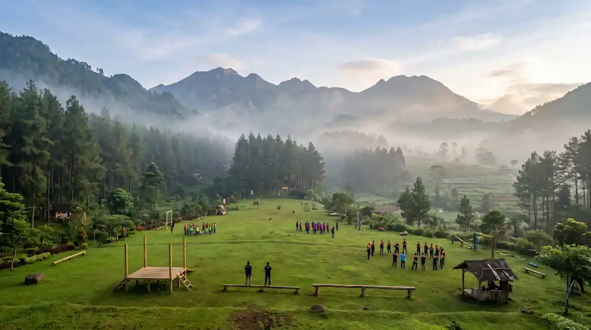

Apa Itu Jasa Outbound Malang dan Siapa yang Membutuhkannya?
Jasa outbound adalah layanan penyelenggaraan kegiatan luar ruang yang dikemas dalam bentuk permainan, simulasi, dan tantangan kelompok, lalu dipandu oleh instruktur atau fasilitator untuk mencapai tujuan tertentu. Tujuan tersebut dapat berupa peningkatan kerja sama tim, penguatan komunikasi, pembentukan karakter siswa, atau mempererat hubungan antaranggota komunitas.
Di Malang, layanan ini mencakup perencanaan program secara menyeluruh, penyediaan instruktur, peralatan permainan, pengelolaan lokasi, dokumentasi, hingga konsumsi dan transportasi sesuai paket yang dipilih.
Pengguna jasa outbound sangat beragam. Perusahaan memakainya untuk team building dan evaluasi tahunan, sekolah untuk pembinaan karakter dan perpisahan, instansi pemerintah untuk penguatan kekompakan antarunit, sedangkan komunitas dan keluarga untuk gathering yang lebih bermakna dibanding sekadar makan bersama.
Perbedaan utamanya dengan wisata biasa terletak pada struktur kegiatan. Outbound memiliki tujuan, skenario permainan, dan sesi refleksi (debriefing) di akhir acara, sehingga pengalaman peserta dapat dikaitkan langsung dengan situasi kerja atau belajar sehari-hari.
Mengapa Malang Cocok Menjadi Lokasi Outbound?
Malang Raya memiliki beberapa keunggulan alami yang mendukung kegiatan luar ruang sepanjang tahun:
- Udara sejuk dan nyaman: Terutama di dataran tinggi seperti Batu, Pujon, dan Poncokusumo, sehingga peserta tidak mudah kelelahan saat beraktivitas di luar ruang.
- Lanskap yang beragam: Mulai dari lahan terbuka, perbukitan, hutan pinus, kebun, air terjun, hingga pantai di Malang Selatan yang dapat disesuaikan dengan tema kegiatan.
- Akses relatif mudah: Sebagian besar lokasi dapat dijangkau dari pusat Kota Malang dalam waktu yang wajar dan tersedia banyak pilihan penginapan serta tempat makan.
- Ekosistem wisata yang matang: Penyelenggara dapat menggabungkan outbound dengan kunjungan wisata, kuliner, atau kegiatan sosial setelah sesi utama.

Di Mana Saja Lokasi Outbound di Malang dan Daerah Sekitarnya?
Pemilihan lokasi sebaiknya mengikuti tujuan kegiatan, jumlah peserta, durasi, dan anggaran. Berikut gambaran area yang umum dipilih untuk outbound di Malang Raya:
- Kota Batu dan Bumiaji: Pilihan populer untuk korporasi dan sekolah karena fasilitas penunjangnya sangat lengkap, mulai dari penginapan hingga area terbuka luas.
- Pujon: Kawasan pegunungan yang sejuk dengan banyak area alam terbuka, cocok untuk outbound bernuansa pedesaan dan camping.
- Poncokusumo dan Tumpang: Area di sisi timur Malang dengan suasana asri dan jalur menuju kawasan Bromo, cocok untuk program yang menggabungkan trekking dan permainan alam.
- Kota Malang dan sekitarnya: Praktis untuk kegiatan setengah hari yang tidak memerlukan perjalanan jauh, misalnya fun games di lapangan atau halaman gedung.
- Malang Selatan: Kawasan pesisir yang dapat dipilih untuk gathering bertema pantai, dengan catatan kondisi ombak dan cuaca selalu menjadi pertimbangan keselamatan utama.
- Luar Malang Raya: Program dapat diadaptasi ke daerah lain seperti Pasuruan atau sekitar Bromo jika kebutuhan peserta menuntut lokasi di luar Malang.
Sebelum memutuskan lokasi, pastikan penyedia jasa sudah meninjau area, memahami jalur evakuasi, dan memiliki koordinasi dengan pengelola tempat.
10 Program Outbound di Malang yang Paling Sering Dipilih
Berikut sepuluh program yang umumnya ditawarkan penyedia jasa outbound Malang. Kombinasinya dapat disesuaikan dengan tujuan dan profil peserta:
- Fun games dan ice breaking: Permainan ringan untuk mencairkan suasana dan membuat peserta saling mengenal di awal acara.
- Team building games: Permainan kelompok bertahap yang melatih kerja sama, pembagian peran, dan strategi bersama.
- Flying fox: Aktivitas meluncur di atas lintasan kabel yang melatih keberanian dan rasa percaya diri dengan pengawasan peralatan keselamatan.
- High rope dan low rope: Rangkaian tantangan keseimbangan dan kepercayaan; low rope cocok untuk pemula, high rope untuk peserta yang siap.
- Capture the flag dan permainan strategi: Permainan kompetitif antarkelompok yang menuntut komunikasi cepat dan kepemimpinan situasional.
- Fun trekking dan jelajah alam: Jalan santai di jalur alam yang dipadukan dengan pos-pos permainan atau misi kelompok.
- Camping dan api unggun: Kegiatan menginap di area terbuka dengan sesi malam yang menekankan kebersamaan dan refleksi.
- Outbound anak dan pelajar: Permainan edukatif yang mengemas pembelajaran karakter, disiplin, dan kerja sama dengan cara menyenangkan.
- Games air dan permainan basah: Aktivitas segar untuk sesi siang hari yang membangun keakraban dan keseruan.
- Sesi refleksi dan debriefing: Diskusi akhir yang mengaitkan pengalaman permainan dengan situasi kerja atau belajar sehari-hari.
Sesi refleksi sering menjadi bagian yang paling menentukan, karena di situlah pengalaman permainan diterjemahkan menjadi pembelajaran yang bisa diterapkan peserta setelah acara selesai.
Apa Saja Program Pendukung di Luar 10 Program Tersebut?
Selain sepuluh program utama, banyak penyelenggara menambahkan elemen pendukung agar kegiatan lebih lengkap:
- Pelatihan kepemimpinan dan motivasi: Sesi ruangan singkat yang melengkapi permainan di lapangan.
- Kegiatan sosial: Seperti bakti lingkungan atau penanaman pohon yang memberi dimensi kontribusi pada acara.
- Lomba antartim dan pemberian penghargaan: Untuk menjaga semangat serta apresiasi sepanjang kegiatan.
- Dokumentasi foto dan video: Termasuk drone bila lokasi dan izinnya memungkinkan.
- Paket konsumsi dan penginapan: Dari makan siang sederhana hingga paket menginap lengkap.
- Transportasi peserta: Penyediaan bus atau kendaraan antar-jemput dari titik kumpul ke lokasi.
Bagaimana Cara Memilih Jasa Outbound yang Tepat?
Jasa outbound yang baik tidak diukur dari banyaknya permainan, tetapi dari kesesuaian program dengan tujuan peserta serta konsistensi dalam menjaga keselamatan. Beberapa hal yang perlu diperiksa:
- Tujuan kegiatan yang jelas: Penyedia yang baik akan bertanya dulu mengenai tujuan, profil peserta, dan hasil yang diharapkan sebelum menawarkan paket.
- Pengalaman dan kualitas instruktur: Termasuk rasio instruktur terhadap peserta dan kemampuan memfasilitasi sesi refleksi.
- Standar keselamatan: Mulai dari kondisi peralatan, prosedur penanganan darurat, sampai kesiapan P3K dan kontak layanan kesehatan terdekat.
- Portofolio dan referensi: Dokumentasi kegiatan sebelumnya dan testimoni dari klien yang dapat dihubungi.
- Transparansi biaya: Rincian apa saja yang sudah dan belum termasuk dalam paket agar tidak ada biaya tambahan mendadak.
- Fleksibilitas program: Kemampuan menyesuaikan permainan dengan usia, kondisi fisik, dan jumlah peserta, termasuk rencana cadangan saat hujan.
Paket Standar vs Paket Custom: Mana yang Lebih Cocok?
Pilihan antara paket standar dan paket custom bergantung pada tujuan kegiatan, waktu persiapan, dan anggaran:
| Aspek | Paket Standar | Paket Custom |
|---|---|---|
| Penyusunan Program | Menggunakan rangkaian permainan yang sudah tersusun | Disusun ulang sesuai tujuan dan profil peserta |
| Waktu Persiapan | Lebih singkat dan praktis | Lebih panjang karena ada diskusi kebutuhan |
| Fleksibilitas | Terbatas pada pilihan yang tersedia | Tinggi, dapat dikombinasikan dengan sesi pelatihan |
| Rekomendasi Peruntukan | Gathering umum, kegiatan sekolah, dan acara santai | Team building korporasi dan target pengembangan khusus |
Bagaimana Standar Keselamatan dalam Kegiatan Outbound?
Keselamatan adalah syarat utama, bukan tambahan. Kegiatan outbound melibatkan aktivitas fisik di ruang terbuka sehingga penyedia perlu memastikan prosedur berikut dijalankan:
- Peralatan seperti harness, tali, dan helm diperiksa sebelum digunakan dan dipakai sesuai fungsinya.
- Instruktur memberi pengarahan keselamatan (safety briefing) dan demonstrasi sebelum setiap permainan dimulai.
- Aktivitas berisiko tinggi bersifat sukarela, dan peserta tidak dipaksa menyelesaikan tantangan yang membuatnya tidak nyaman.
- Tersedia kotak P3K dan petugas yang memahami penanganan awal cedera ringan.
- Rute dan kontak evakuasi menuju fasilitas kesehatan terdekat diketahui oleh tim sebelum acara dimulai.
- Aktivitas dihentikan atau diganti bila cuaca memburuk, misalnya hujan deras, petir, atau angin kencang.
Bagaimana Alur Pemesanan Jasa Outbound di Malang?
Alur pemesanan jasa outbound bersama Jasa Outbound Malang umumnya melingkupi tahapan berikut:
- Konsultasi kebutuhan: Diskusi awal mengenai tujuan, jumlah peserta, tanggal, dan perkiraan anggaran.
- Pemilihan lokasi dan program: Penentuan skema paket beserta survei lokasi bila diperlukan.
- Penerbitan penawaran harga: Pengiriman proposal SPH beserta rincian fasilitas yang termasuk di dalamnya.
- Konfirmasi dan DP: Pembayaran uang muka dan pengaturan jadwal pelaksanaan resmi.
- Pelaksanaan dan evaluasi: Briefing panitia, pelaksanaan kegiatan di lapangan, hingga pemberian laporan dokumentasi.